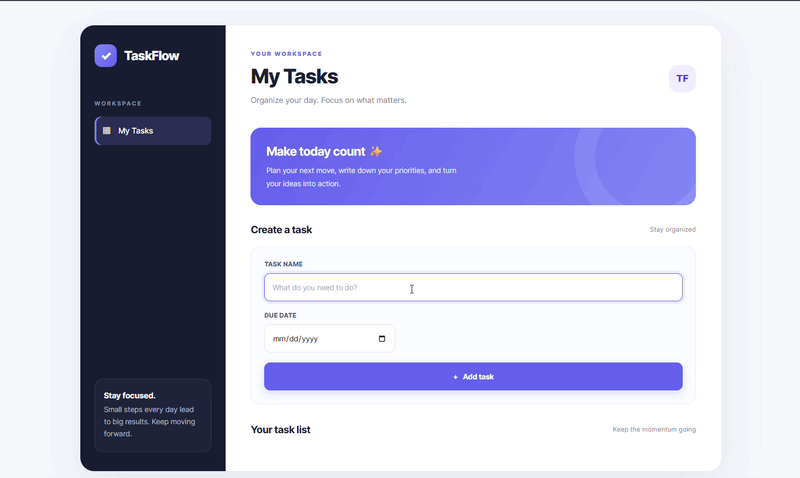
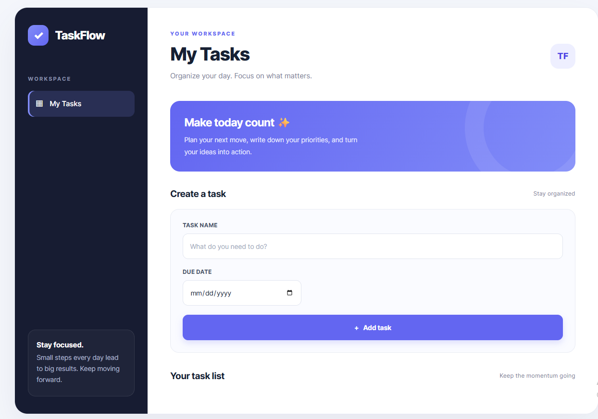
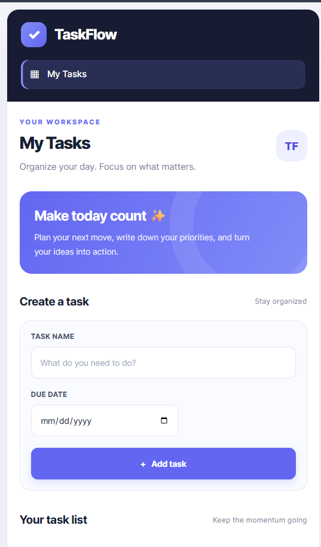

LINK



:::
TaskFlow is a simple todo list application that lets users add tasks with due dates and delete tasks when they are no longer needed.
The project is built to practise core JavaScript skills, especially arrays, objects, functions, DOM manipulation, events, loops, and date handling.
<!-- Add a real screenshot or GIF to your repository, then replace this placeholder. -->
<!-- Example:  -->
Demo media: Add a screenshot or GIF of your application here. For example, save it as
assets/taskflow-demo.gifand uncomment the image line above.
Technology Role
HTML5 Defines the input fields, button, and task container.
CSS3 Styles the dashboard and makes the layout responsive.
This project uses several important JavaScript fundamentals.
let is used for the task array because its contents change as tasks
are added or removed. const is used for values that are not reassigned
within a function.
let todo_list = [];
const todo_input = document.querySelector(".todo_input");
Each task is stored as an object with a name and a date property.
The objects are kept inside the todo_list array.
let todo_list = [];
todo_list.push({
name: "Learn JavaScript",
date: "25/10/2026"
});
push(): adds a task object to the end of the array.splice(): removes an item from the array by index.The Document Object Model (DOM) lets JavaScript access and change HTML elements.
document.querySelector(".todo_input");
In this project, querySelector() finds an element by its CSS class.
The code reads input values, clears fields, and updates the .tasks_box
container.
The HTML uses event attributes to call JavaScript functions:
<button onclick="add_task()">Add task</button>
<input onkeydown="handle_enter_btn(event)" class="todo_input">
onclick calls add_task() when the button is clicked.onkeydown calls handle_enter_btn(event) when a key is pressed.event.key identifies which key was pressed.For a larger application, addEventListener() is generally easier to
maintain because it separates JavaScript behavior from HTML markup.
Each function has a specific job:
add_task() collects and stores the input.generate_HTML() renders the current array on the page.delete_task(index) removes a selected task.handle_enter_btn(event) supports keyboard submission.Keeping these responsibilities separate makes the code easier to understand and improve.
generate_HTML() uses a for loop to visit each task. The loop index
is also used to identify which task should be deleted.
for (let i = 0; i < todo_list.length; i++) {
const object = todo_list[i];
// Render this task.
}
Array indexes begin at 0, so the first task has index 0, the second
has index 1, and so on.
The date input returns a string in YYYY-MM-DD format when a date is
selected. If the field is empty, the code creates today's date using
new Date().
const date_value =
date_input.value ||
`${today.getFullYear()}-${String(today.getMonth() + 1).padStart(2, "0")}-${String(today.getDate()).padStart(2, "0")}`;
The || operator uses the right-hand value when the input value is
empty. getMonth() is zero-based, so + 1 is required.
padStart(2, "0") keeps the month and day at two digits.
The code then splits the date into parts and displays it as
DD/MM/YYYY.
Backticks let JavaScript insert variable values into strings:
tasks_box.innerHTML += `
<p>
${object.name}
${object.date}
<button onclick="delete_task(${i})">Delete</button>
</p>
`;
This is called a template literal. It makes it convenient to build
HTML strings, but user-provided text should not be inserted into
innerHTML without proper handling.
When a task is deleted, splice() changes the original array. Calling
generate_HTML() afterward redraws the list so the interface matches
the data.
function delete_task(index) {
todo_list.splice(index, 1);
generate_HTML();
}
This demonstrates a basic UI pattern: update the data, then update the displayed interface.
add_task()Purpose: Read the user's input, determine the task date, store the task, clear the form, and refresh the task list.
Step by step:
YYYY-MM-DD to DD/MM/YYYY.{ name, date } object into todo_list.generate_HTML() to refresh the displayed tasks.Current limitation: The function does not prevent an empty task name from being added. Input validation would improve it.
generate_HTML()Purpose: Display all task objects in the todo_list array.
Step by step:
.tasks_box container.innerHTML = "".delete_task(index).The function redraws the complete list each time it runs. This is straightforward for a small learning project.
delete_task(index)Purpose: Remove one task.
Step by step:
splice(index, 1) to remove one item at that index.generate_HTML() so the remaining tasks appear on the page.handle_enter_btn(event)Purpose: Allow the user to add a task by pressing Enter.
function handle_enter_btn(event) {
if (event.key === "Enter") {
add_task();
}
}
The function checks whether the pressed key is "Enter". If it is, it
calls add_task(). Otherwise, it does nothing.
The diagram below shows how user actions flow through the functions and how the array and page stay in sync.
flowchart TD
A([User interacts with the page]) --> B{How does the user submit?}
B -->|Clicks Add| C[add_task]
B -->|Presses Enter| D[handle_enter_btn]
D --> E{Is the key Enter?}
E -->|No| F([Do nothing])
E -->|Yes| C
C --> G[Read task name and date]
G --> H{Was a date selected?}
H -->|Yes| I[Use selected date]
H -->|No| J[Calculate today's date]
I --> K[Format date as DD/MM/YYYY]
J --> K
K --> L[Push task object into todo_list]
L --> M[Clear input fields]
M --> N[generate_HTML]
N --> O[Clear tasks_box]
O --> P[Loop through todo_list]
P --> Q[Render task, date, and Delete button]
Q --> R([Updated task list appears])
R --> S{User clicks Delete?}
S -->|Yes| T[delete_task index]
T --> U[Remove task with splice]
U --> N
S -->|No| V([Wait for next action])
classDef action fill:#e8eaff,stroke:#6366f1,color:#25265e
classDef data fill:#e3f8ef,stroke:#20a36a,color:#174d35
classDef decision fill:#fff3d9,stroke:#d89a18,color:#63430b
class C,D,G,K,N,T,U action
class L,P,Q data
class B,E,H,S decision
todo_list is the data source for the displayed task list.
generate_HTML() reads the current array to decide what should be
displayed.This is a simple example of keeping application data and the user interface synchronized.
Clone the repository:
git clone https://github.com/YOUR_GITHUB_USERNAME/taskflow-todo-app.git
Open the project folder:
cd taskflow-todo-app
Open index.html in your browser, or use the Live Server
extension in Visual Studio Code.
Note: Tasks are currently stored in a JavaScript array. Refreshing the page clears the list because the project does not yet save tasks to persistent storage.
Evolve TaskFlow from a simple todo list into a more complete task manager with task completion, editing, filters, and persistent storage.
Built as a JavaScript learning project.